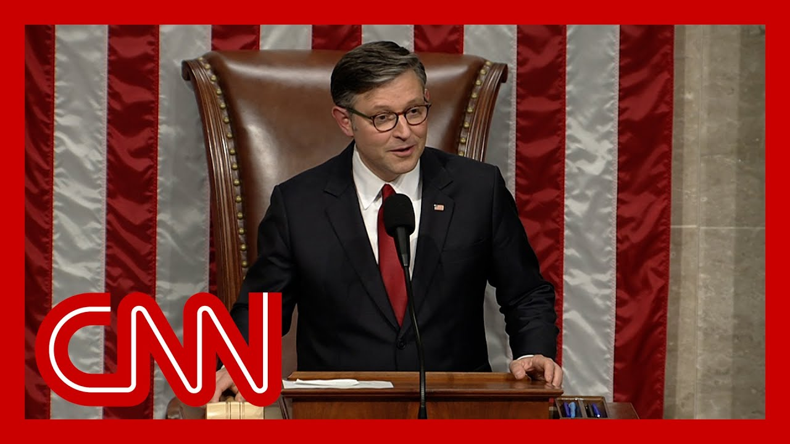

【CNN News 20250704 美国国会通过特朗普的"大而美"法案】
Summary: The House passed Trump's major domestic policy bill with a close 218-214 vote after intense negotiations and White House involvement, marking a significant legislative victory for his agenda.
摘要： 众议院以218票对214票的微弱优势通过了特朗普的重要国内政策法案，经过激烈谈判和白宫的积极参与，这标志着其议程的重大立法胜利。

⏱️ Estimated Reading Time: 17 min
📚 四级生词 📚 六级生词 📚 雅思生词 📚 托福生词 📚 专八生词 📚 SAT生词 📚 考研生词 📚 GRE生词 📚 高考生词 📚 其它生词生词
Let's actually listen into the House floor.
让我们实际听听众议院现场的情况。
It looks like from the applause that they've just passed and finalized this bill.
从掌声来看，他们刚刚通过并敲定了这项法案。
Let's listen.
让我们听一听。
I wish to change a vote.
我希望更改投票。
On this vote, the yeas are 218, the nays are 214.
本次投票中，赞成票218票，反对票214票。
The motion is adopted.
动议获得通过。
USA! USA! USA!
美国！美国！美国！
Without objection, the motion to reconsider is laid on the table.
若无异议，重新审议的动议被搁置。
And with chance of USA, USA Republicans securing arguably the biggest legislative win of President Trump's two terms, the final vote 218 yay, 214 nay, Republicans getting this done and sending it now to the White House.
随着美国共和党人可能取得特朗普总统两任内最大的立法胜利，最终投票结果为218票赞成、214票反对，共和党人完成并通过法案，现将其送交白宫。
Let's actually go there with CNN's Kristen Holmes.
让我们跟随CNN的克里斯汀·霍姆斯前往白宫。
I know the president was busy earlier with Eidon Alexander, the American hostage that was released by Hamas earlier this year.
我知道总统早些时候忙于处理今年早些时候被哈马斯释放的美国公民艾登·亚历山大的人质事件。
Do you know if this has been watched closely by the White House or was it presumed that it was going to pass?
您是否知道白宫是否密切关注此事，还是他们假定法案会通过？
I mean, Boris, it's been watched incredibly closely.
鲍里斯，白宫对此事极为关注。
We saw this into the night last night.
我们昨晚一直跟进到深夜。
We know that President Trump was working the phones after midnight.
我们知道特朗普总统午夜后仍在打电话沟通。
We saw him posting on social, essentially sounding exasperated.
我们看到他在社交媒体上发帖，语气显得非常恼火。
Why can't we get this done?
为什么我们不能完成这件事？
This is a no brainer.
这是显而易见的事。
Republicans need to vote on this.
共和党人需要对此投票。
They have been watching, they being the White House and President Trump himself, every single step of the way.
白宫和特朗普总统本人一直在密切关注每一步进展。
Trump himself has been involved in this process with the speaker, with congressional leadership, but also with having conversations with House members.
特朗普本人参与了与议长、国会领导层的协商，并与众议院成员直接对话。
And I just want to take one step back before I go into the process here.
在深入讨论这一过程之前，我想先退一步说明。
This could not be a bigger deal for President Trump and for this administration.
这对特朗普总统和本届政府来说意义重大。
They believe that this bill really encapsulates everything President Trump wants to do with his agenda, that his legacy is going to be sealed in some of the items that are in this bill.
他们认为该法案真正体现了特朗普总统的议程目标，他的政治遗产将通过法案中的部分条款得以巩固。
And that's why it was so important to President Trump to get this across the finish line.
这就是为什么特朗普总统如此重视推动法案通过。
It has been something that has been weighing on the White House as they have been negotiating, having conversations, courting House members for months.
数月来，白宫在谈判、对话和争取众议员支持的过程中承受了巨大压力。
I mean, I was told two days ago that they felt like they had these long, month long relationships with House members that they've been trying to address their problems for some time now.
两天前有人告诉我，他们感觉与众议员建立了长达数月的联系，并持续解决他们的问题。
Now, the other problems with the bill, just to be clear, in some one of the other parts of this that I think might go unnoticed is how much this time, this second term for President Trump is different than the first term.
需要说明的是，法案的其他问题中，容易被忽视的一点是特朗普总统第二任期与第一任期的巨大差异。
They have figured out in that four years that President Trump was not in office how to work the system in their favor.
在特朗普离任的四年间，他们学会了如何让体制为己所用。
That was not something we saw during the chaotic first term.
这是我们在混乱的第一任期内未曾见到的。
And in the last couple of days, we've been talking about this nonstop, this idea that, oh, is the bill on the verge of collapse?
过去几天我们不断讨论法案是否濒临失败的猜测。
And every time I spoke to White House officials, they said they like their odds.
每次与白宫官员交谈时，他们都表示对结果乐观。
They think that they are feeling optimistic.
他们认为形势有利。
And when I ask why, they just point me to what we've seen for the past six months, which was any time President Trump has wanted to get something done in Congress, even with people opposing it, almost every time he has been able to strong arm something through the Senate, through the House that he wanted to get done in terms of his agenda.
当我询问原因时，他们指出过去六个月的情况：每当特朗普总统想在国会推动议程，即使有人反对，他几乎总能通过施压让参众两院通过其主张。
Now, part of that is there is a fear that President Trump, his team will primary some of these House members.
部分原因是众议员担心特朗普团队会在初选中挑战他们。
We saw that last night when he was posting online, he was kind of tapping into that fear.
昨晚他在社交媒体发帖时，就利用了这种恐惧心理。
We also heard him directly say it when it came to Representative Thomas Massey or Senator Tom Tillis.
在谈及众议员托马斯·马西或参议员汤姆·提利斯时，他也直接表明了这点。
But then there's also what we saw them doing behind the scenes, which was arriving at these meetings, the White House with talking points for congressional leadership, for these House members who had serious concerns about parts of the bill.
但我们也看到他们在幕后行动：白宫带着针对国会领导层和持异议议员的谈话要点参会。
I spoke to one House member who was a no before they got to the White House.
一位众议员告诉我，他在去白宫前原本打算投反对票。
When they left the White House, they were a yes.
离开白宫后，他改投了赞成票。
And all the strong arming, all the threats, all of that in their mind after the conversation with the White House team and going through all the aspects of the bill, they came to that conclusion on their own.
尽管存在施压和威胁，但经过与白宫团队的讨论及全面了解法案后，他自行做出了这一决定。
They said that they were the ones who believed in the bill, even though they had been saying publicly that they were not sure about that.
他表示自己最终认同法案，尽管此前公开表达过疑虑。
It was something that was very fascinating to hear.
这种转变非常耐人寻味。
They understood how to talk to to these House members in a way that they didn't the first term.
他们掌握了与议员沟通的技巧，这是第一任期不具备的。
It's really interesting.
这非常有趣。
I mean, what you're almost saying there, Kristen, is it's sort of like the president and those around him.
克里斯汀，你的意思似乎是总统及其团队——
They're effectively the majority whip, right?
实际上扮演了党鞭的角色，对吗？
They are whipping these votes and twisting arms to bring everyone home.
他们通过动员和施压确保议员支持。
Brianna, I don't know if that was directed at me, but I did lose I.F.B. for about two minutes there.
布里安娜，我不确定是否在问我，当时我的耳机中断了两分钟。
You could repeat that question.
您可以重复问题。
It was more an observation.
这更像是一个观察。
I was trying to slyly call back in, but I wasn't even didn't even notice.
我本想悄悄插话，甚至没注意到中断。
You are you are very, very smooth there, Kristen.
克里斯汀，你处理得非常巧妙。
OK, so but he's effectively the majority whip, right?
所以实际上他就是党鞭，对吗？
I mean, just how he whips these votes calls people over.
他如何动员投票、召集人员——
It sort of evokes that it sort of evokes that art that is very, you know, it's difficult, honestly, on the Hill to do.
这确实展现了国会山罕见的政治手腕。
But he's really sort of mastered how to do it and to use his clout with the action of just targeting each individual member.
但他已掌握如何运用影响力逐个争取议员。
And you see here some of them taking selfies as they are celebrating this moment.
您可以看到部分议员正在自拍庆祝这一时刻。
He really is what has whipped these votes, Kristen.
克里斯汀，他确实是推动投票的关键力量。
Yeah, and it's not just President Trump.
是的，不仅是特朗普总统。
I do think we need to be very clear here.
需要明确的是——
They are using every lever that they have.
他们动用了所有可用手段。
We know that Senator J.D. Vance has relationships with some of these senators.
我们知道参议员J.D.万斯与部分参议员有交情。
That is how the bill got through the Senate as well.
这也是法案能在参议院通过的原因。
He was having one on one meetings with Rand Paul, who again didn't vote for it, but also he was the last person who met with Lisa Murkowski before her critical yes vote.
他与兰德·保罗单独会面（保罗最终仍投反对票），但也是丽莎·穆尔科斯基投下关键赞成票前最后接触的人。
He was working every relationship he had, and it wasn't just him.
他调动了所有人脉，且不仅是他个人。
It was all of the administration, all of the White House, their team.
整个行政团队、白宫都在行动。
Up there every single day.
每天都在国会山工作。
And when it comes to the end game here, which, of course, for some of these House members is getting reelected for others, it's getting this bill passed.
对部分议员而言，最终目标是连任；对其他人则是通过法案。
It's their agenda, their legacy.
这关乎他们的议程和遗产。
I do want to read you one thing that someone told me this morning, and I wrote it down because it goes to show you where his power is.
我想转述今早一位人士的话（我特意记录），这能体现他的权力所在：
And this was from a lawmaker who told me Trump is in the strongest position of anyone in generations, probably ever in terms of impacting primaries for Congress.
一位议员告诉我："特朗普在影响国会初选方面的权力堪称数代以来最强，甚至可能是史上之最。"
So anyone coming from a hard right district, which is most or likely most of this conference, will have to deal with that.
因此，来自极右翼选区（占共和党会议多数）的议员都必须面对这点。
And he's just not going to tolerate people going against his agenda.
他不会容忍任何人反对其议程。
And that was in the mind in the back of the minds of a lot of these members when they were casting this vote.
这正是许多议员投票时的心理考量。
We saw there was this whole scramble last night.
我们昨晚目睹了整个混乱过程。
I believe it was like midnight or 11 where they were saying, OK, we're not going to vote until tomorrow.
约午夜11点时，他们表示次日再投票。
We've decided we're telling them we're not voting until tomorrow.
已决定通知明日再投。
Trump posts on Trus Social.
特朗普在Truth Social发帖：
We have the votes.
我们已获得足够票数。
We're going to vote now.
现在开始投票。
Next thing we know, it's going into a vote.
随后立即进入了投票程序。
I mean, it's he's controlling the narrative even from just being here at the White House while they're all up on the Hill.
即使身在白宫，他仍能控制国会山的议程走向。
And some of that is the way that his team has worked the system.
部分归功于其团队对体制的运作。
Others, that fact that he has this enormous amount of power over the Republican Party, something that we really haven't seen from a leader in quite some time to have control over your whole party like that.
另一方面是他对共和党的巨大掌控力——这种全面控制政党的能力已多年未见。
We certainly did not see it in Trump's first term.
这在其第一任期内确实不存在。
There was a lot of factions of the Republican Party.
当时共和党内派系林立。
We didn't see it when Biden was in office either.
拜登执政时民主党也未见此情形。
There were factions of the Democratic Party.
民主党内部存在分歧。
He has this umbrella power over his conference right now.
而他现在拥有统御全党的权力。
That is partially the reason that he was able to get this through.
这也是法案能通过的部分原因。
Some of that may have to do with experience from his first term.
部分可能源于第一任期的经验。
Kristen, please stand by.
克里斯汀请稍候。
Let's go to Lauren Fox on Capitol Hill.
现在连线国会山的劳伦·福克斯。
Lauren, a very different approach to getting legislation passed from Trump this time around compared to his first term in office.
劳伦，与第一任期相比，特朗普此次推动立法的方式截然不同。
Yeah, I mean, I just remember the effort to try to repeal and replace Obamacare back in 2017.
是的，我记得2017年试图废除奥巴马医改的努力。
And there was sort of so many iterations of it on the House side.
众议院方面经历了多次修改。
Obviously, it ultimately failed over in the Senate.
最终在参议院失败。
But there were so many last minute requests that came in from the president at the 11th hour during that entire negotiation that members on Capitol Hill would get to kind of a tentative place of agreement.
但整个谈判过程中，总统总在最后时刻提出新要求，导致国会成员刚达成初步共识又生变数。
And then all of a sudden, something would change with what the administration wanted, and they'd go back and forth and back and forth.
行政部门的立场突变导致反复拉锯。
I do think one of the most interesting pieces of this is it seemed like from the beginning to the end, the administration was very clear about what their objectives were.
本次最值得注意的是，行政部门自始至终目标明确。
They were very clear about what they needed in this bill.
对法案需求非常清晰。
And they did give a lot of latitude to both tax writing committees in the Senate and in the House to work their will as well.
同时给予参众两院税务委员会充分自主权。
Obviously, there are pieces of this bill that Donald Trump promised on the campaign trail, things like a temporary pause on taxes on tips for certain individuals and workers.
法案包含特朗普竞选承诺，如暂停对部分人员小费征税。
That is just one of those examples.
这只是其中一例。
But there are also pieces of this, like making more of the tax cuts permanent, that were really important to Senate Republicans that became part of this deal.
还包括将更多减税措施永久化等参议院共和党人重视的内容。
So I think that that is very different than what we saw the first time.
这与第一次形成鲜明对比。
I do want to note that one of the more interesting pieces of this is going to be how do Republicans sell this?
值得注意的是共和党将如何推销此法案。
Because to this point, this bill has not been very popular across the country.
因为目前法案在全国并不受欢迎。
And I do wonder if part of that has been so much Republican infighting as they have tried to find a path forward that everyone could live with.
我怀疑共和党内部争斗是否影响了公众观感。
Now that they're more unified, now that this bill has passed, do they work together more efficiently to come up with a message to sell this legislation?
如今团结通过法案后，他们能否更高效地制定宣传策略？
I think that remains to be seen.
这仍有待观察。
You know, they've been arguing that this is a huge tax cut for the American people.
他们宣称这是对美国民众的大幅减税。
Many of these tax cuts are essentially just a continuation of the tax cuts from 2017.
许多减税政策实质是2017年减税的延续。
I'm going to be really interested to see whether or not Americans really feel that difference, given the fact that those didn't expire and then need to come back.
鉴于此前政策未失效，我很好奇民众是否能感受到变化。
But the fact that this will be a seamless process.
但过渡过程会无缝衔接。
But I think that that's going to be something to keep a very close eye on.
这值得密切关注。
Meanwhile, Democrats, we know exactly what their message is going to be because Hakeem Jeffries laid it out for eight and a half hours.
民主党方面，哈基姆·杰弗里斯长达八个半小时的发言已阐明其立场。
And I think that those two messages, now we're going to see which one is going to win out in the in the court of public opinion.
我们将看到哪种主张能赢得舆论支持。